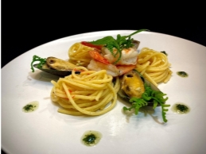
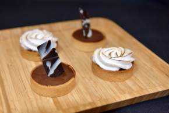

No. 189.5 感知小行星
★ 釀造人
▲501-01主題攤位
臺灣啤酒發源地文化資產✕釀造魔法學（台灣菸酒建國啤酒廠）
時間：11/6-7 10:00-17:30，11/6 18:30-21:00
地點：5樓 未來廚房閱讀區
設攤單位：臺灣菸酒股份有限公司臺北啤酒工場、台灣歷史資源經理學會
介紹：
呈現「台灣啤酒發源地」歷史與現況，透過文物、文獻及故事呈現啤酒工廠中具時代性的生產技術及臺北發展關連性，同時探討產業文化資產在當代社會的保存價值與意義。建國啤酒廠至今日仍生產啤酒，是「活的」產業文化資產，啤酒生產歷史超過百年。啤酒釀造中的微生物觀察與知識擴展，其實也與當代我們面對的疾病與預防接種知識息息相關。產業中使用的生產技術演進、傳承方式都適合轉化為教育體驗，學習微生物及釀造科學的學習方式。
▲501-02主題攤位
禾餘麥酒-在地原料的百變風味
時間：11/6 10:00-17:30、18:30-21:00
地點：5樓 東側走廊
設攤單位：禾餘麥酒
介紹：
透過四感，體驗在地原料不同風貌
視覺 - 直接觀看
觸覺 - 在地原料恐怖箱，觸摸原物料的形狀
嗅覺 - 聞香瓶品嚐原物料香氣
味覺 - 帶啤酒回去品嚐
釀造，從栽種開始。
禾＝穀粒；餘＝豐盛
田裡的鍊金術士，化在地穀物為瓶中甘醇
禾餘麥酒從台灣農田裡出發，
核心理念在於復耕、種植，與加値台灣既有品種『孤兒』作物。
利用在地契作減少進口，增加產品的地區及獨有性；
同時加入在地飲食文化素材，做出有別於世界各地之發酵性飲料，
創造在地作物的新價値。
★ 喝吧！成為釀造人
▲501-03 釀造工作坊
《成為釀造人》釀造科學體驗工作坊
地點：5樓 未來廚房
時間：每場約180分鐘
場次：11/7 （日） 9:30-12:30, 14:00-17:00
活動人次：採預約制，每場30人(過程需使用爐具，建議12歲以上，12歲以下者需家長陪同報名參加)
費用：免費 (報名參加者於報到時，請持當日有效常設展票券或有效會員卡報到參加)
活動單位：臺灣菸酒股份有限公司臺北啤酒工場、台灣歷史資源經理學會
介紹：
本活動邀請臺北啤酒工場釀造股股長擔綱講師，帶領您從親自體驗，學習啤酒釀造的科學知識。從原料處理依序進到糖化、醱酵、包裝步驟的介紹，讓參與者體驗釀酒的同時增進對生活科學現象的了解，並認識其配方如何鑲嵌於各時期社會文化脈絡。
活動流程：啤酒原料認識 --> 煮麥汁操作+科學原理 (「酶」作用、澱粉分解過程) --> 瓶蓋密封操作+科學原理 (3的倍數)
參與者可自行準備「耐熱容器」 (至少耐90-100度為佳) 約一公升，可把麥汁成品攜回飲用。
★香料人
▲502-01 料理工作坊
主廚料理自己來
地點：5樓 未來廚房 、11樓 屋頂花園
場次：11/6 17:00-18:00, 18:30-19:30
活動人次：活動採預約制，每場16人
費用：每人2100元，需滿18歲以上，報到時請出示個人證件
活動單位：科教館Ｘ水酉水國際
介紹：
著迷於各種味道的細節、香氣，對縈繞鼻尖的一切流連忘返嗎？本活動將帶領你學習如何以簡單的原料轉換為令人撲鼻的香氣、施展讓人食指大動的魔法。療癒之夜將蒐羅台灣依山傍海的優勢食材與天然辛香料，以山林賦予我們的豐富恩典製作前菜；並利用黑潮帶來的海洋恩惠、結合辛香料讓山與海在主餐中完美相遇；最後，再以優異品質的台灣在地水果，芬芳優雅的甜點作為收尾。準備好來一場美妙的嗅覺旅行了嗎？
參與來賓將在主廚帶領下，手把手現場製作屬於自己的餐點。從食材處理、搭配，到主餐的關鍵元素，都會以平易近人的方式，讓沒有廚房經驗者也能輕鬆做出美味料理，引領大家完成屬於自己的山海回憶。最後於屋頂花園與星空美酒相伴，享用自己親手製作的餐點，和師傅精心製作的甜點。
 
※未來廚房參與者除專屬飲品外，憑參加證可獲得屋頂花園星空酒吧優惠券，可享酒類飲品專屬優惠。
料理菜單：主廚帶領烹飪
前菜：舒肥雞胸沙拉佐莎莎醬
【山野】享受山林土地的芬多精
主要食材：雞胸肉、過貓（山菜）、番茄、柳橙、洋蔥、檸檬
主菜：蒜香海鮮義大利麵
【浪回】感受海風洋流的生命
主要食材：鮮蝦、淡菜、義大利麵、時蔬、檸檬
主廚專製甜點之享用
甜點一：古早味鳳梨塔
【回憶】 揉合現代與古典的新意
主要食材：鳳梨、迷迭香、鮮奶油、塔
甜點二：百香巧克力塔
【戀】著迷雋永回甘的苦澀
主要食材：巧克力、辛香料甘納許、百香果、塔
餐前飲料：無酒精開胃氣泡飲
餐搭飲料：自選一杯搭配餐點飲料(葡萄酒｜雞尾酒｜無酒精雞尾酒)
活動流程：
1. 製作晚餐（5樓 未來廚房）：第一場 11/6 17:00-18:00 | 第二場 11/6 18:30-19:30
2. 星光晚餐時光（11樓 屋頂花園）：11/6 18:00-21:00 於製作晚餐後，憑證可至11樓屋頂花園用膳，與換領飲品與點心
★斜槓廚師與他的50+廚房
▲503主題攤位
遇見斜槓主廚與他的50+廚房
地點：5樓 化學展區
時間：11/7 10:00-17:30
設攤單位：嶼魚廚房
介紹：
嶼魚廚房的核心理念可以用一句話來概括：
［買給家人用的食材，煮給家人吃的料理］
對待家人的堅持：不油炸、不使用再製品，使用蒸、煮、烤三種烹調方式來處理新鮮的食材。